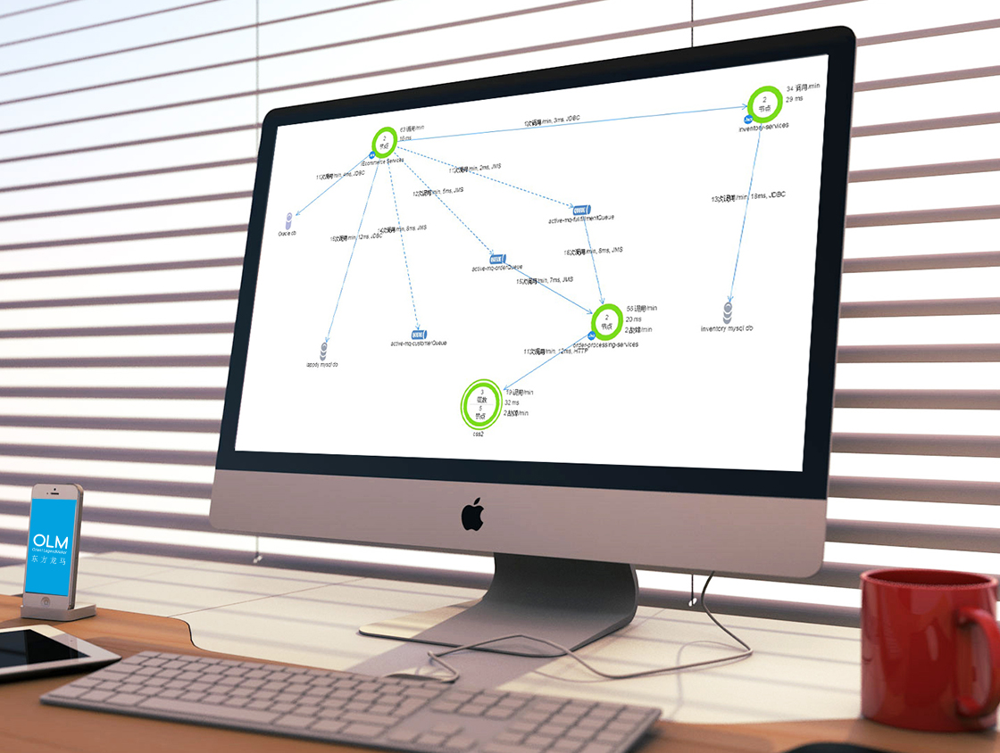

解决方案
Solutions我们专注于提供全系列企业级性能管理方案和相关的IT服务，在帮助用户提高业务效率和整体生产力的同时，降低运营和运维成本。全系列性能管理方案包括：数据库管理，交易性能管理，核心业务保障管理，网络性能管理和运营大数据分析等。
东方龙马是专注于高端软件技术，以"数据库服务"及"应用性能管理"为核心业务的国内领先IT专业服务公司
我们专注于提供全系列企业级性能管理方案和相关的IT服务，在帮助用户提高业务效率和整体生产力的同时，降低运营和运维成本。全系列性能管理方案包括：数据库管理，交易性能管理，核心业务保障管理，网络性能管理和运营大数据分析等。
东方龙马是专注于高端软件技术，以"数据库服务"及"应用性能管理"为核心业务的国内领先IT专业服务公司


安码龙提供了针对最终用户的全方位监控，覆盖了浏览器渲染、网络延迟、服务器响应以及后台DB处理的端对端性能监控。并能比较不同区域、不同设备端的最终用户的体验。
通过最终用户的体验测量应用的性能，是对业务系统性能最有效的度量。安码龙的最终用户体验管理（EUEM）的解决方案，给你的不只是了解用户体验，而是真正理解它，将终端用户的使用环境及企业业务质量有效的管理在一起。
主要功能如下：
基于最终用户体验的监控管理用户展示

通过基于浏览器等的实时响应时间，获得真正用户体验的完全可见性，从web应用程序的触发下钻到相应的应用服务器调用堆栈跟踪，让您从浏览器、网络、应用程序服务器、以及数据库端到端性能完整可见。
● 页面、Ajax请求和iframes的性能微调；
● 高度精确的浏览器的响应时间分解；
● 在最终用户的浏览器下产生的所有JavaScript错误；
● 事故报告和详细的移动网络请求度量确保您的移动应用程序的最大可视化。
● 设置、运行非常容易，如同在要监控的页面和移动应用上添加几行代码一样简单。
● 安码龙APPROBE用户体验管理的架构设计支持每天数十亿设备和用户会话，这是管理企业网站和移动应用的完美解决方案。
安码龙APPROBE能自动发现并生成你的应用程序和服务的拓扑视图，实时地监控到各节点之间的调用关系、请求数、响应时间等性能数据。

安码龙APPROBE能自动的发现各类事务交易并能够跨越整个分布式系统进行端到端的跟踪，针对出问题的事务交易提供详细的性能数据快照。
也可以从交易的视角直接找到性能缓慢的交易作进一步的下钻，发现性能瓶颈点，如下图：
安码龙APPROBE能快速定位造成性能问题的瓶颈点，提供程序调用、问题代码、数据库调用、硬件资源状况的根本原因分析。
如下图所示：
设备和用户分析
移动用户数量众多、急躁，甚至很小的性能问题都会他们离开我们去使用其它服务商的产品。安码龙APPROBE移动APM提供给你的监视移动性能的方法，让你可以保证你的客户体验。了解你的用户使用的设备、运营商、操作系统和应用程序APP版本。
事故报告
主动检测和报告的应用程序事故、僵死和网络请求失败。实时了解应用程序事故和僵死的根源。
网络请求快照与服务器端的关联获得移动设备到服务器端的的端到端的可视化监控。
自定义度量
利用动态基线跟踪任何自定义指标和异常。
易于部署
安装只需几分钟，其直观的Web界面便于发现和诊断性能问题。
支持应用性能、各种数据库、主机的监控，提供统一的应用性能管理界面.
数据库监控产品具有小于1%的开销，安码龙APPROBE数据库监控适合于大规模生产下进行7*24的监测，并提供数据库性能的全天候的可见